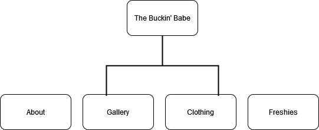

This site will be used for my sister's small business, The Buckin' Babe. It will serve as a way for her to
showcase her products, inquire customer information, and tell her unique story through unique items.
On this customers will be able to read about the company and its beginnings. Customers can also
browse a photo gallery of products, contact the company through an inquiry, and shop for the many
products that The Buckin' Babe has to offer!
The overall purpose of the website is to showcase my sister's small business.
Client Information
Client Name: Claren Crisp
Client Business: The Buckin' Babe
Client Email: Private
Client Phone Number: Private
Site Map

Home Page
Purpose of the page is to give a brief description about the business as serve as the home page.
Audience: Customers
Content: The home page will feature a nav bar at the top and a logo with possibly a slogan attached..
About Page
Purpose: To introduce the business and tell the customers about who we are and what we have to offer.
Audience: Customers
Content: Introductory paragraph, self portrait, overview of business and history..
Gallery Page
Purpose: To showcase the products to the customers
Audience: Customers
Content: Photo Gallery with expandable images
Clothing
Purpose: To go more in depth with the western-themed clothing that we have to offer
Audience: Customers
Content: Photos, Descriptions, Slideshow
Freshie Page
Purpose: To go more in depth on Freshies, which are handmade scented fresheners.
Audience: Customers
Content: Photos with description, Slideshow
Dynamic Functionality
This website will feature an interactive photo gallery, submission form for gathering customer
inquiries, and multiple slideshows to showcase product.